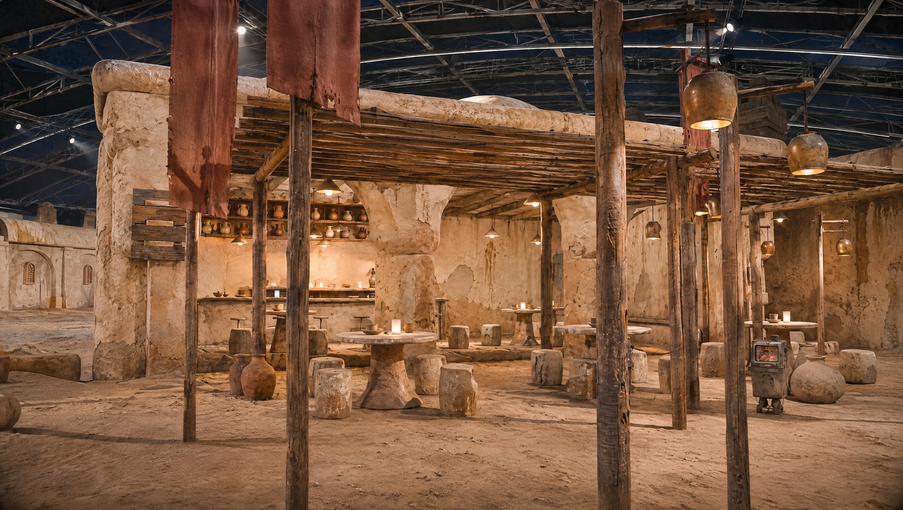
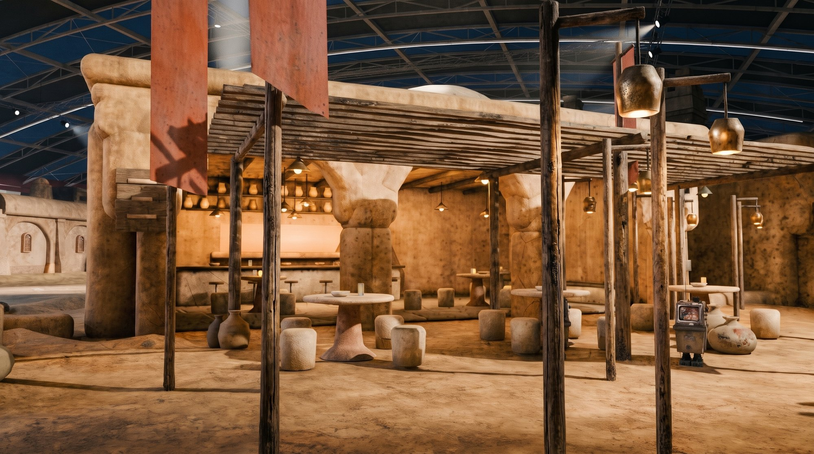

LOGBOEK POP HARDSKILL
WEEK 2
LV1.3 · BLOK 6Wat hebben we gedaan?
We hebben het hele proces online gezet als interactieve film in Star Wars stijl, met één aflevering per leerdoel. Zo kan ik in mijn deliverables naar afleveringen verwijzen. In aflevering 2 loop je zelf door ons grijze model van de RAI.
De rolverdeling in het team ligt vast. Ik ben Virtual Experience Master en bewaak de beleving als geheel, Stan is Scrum Master en 3D Model Artist en Elvin is Star Wars Lore Master.
De Blender beelden zijn omgezet met een AI laag. Daarvoor hebben we twee beeldmodellen naast elkaar gelegd, GPT Image 2.6 en Nano Banana 2.1. Twee shots werden door het AI model geweigerd, de cantina door de zuilen en de droids van dichtbij. Die renderen we zelf ultra realistisch in Blender.
Bewijs en voorbeelden




Wat leerde ik?
Indeling, camera en objecten blijven gelijk, de AI verandert alleen materiaal, licht en slijtage. Het ene beeldmodel is niet automatisch beter dan het andere, dus ik vergelijk ze per shot.